Sheet-metal & cutting machines 7 items · 7 lot
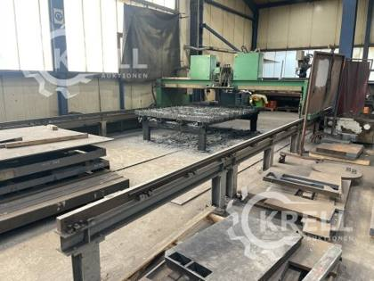
Product photoCNC plasma / oxy-fuel cutting machine
CNC-Plasmaschneid- und Autogen-Brennschneidmaschine, ZINSER
Est. weight ≈ 2.0–4.0 t
1 lotRef #78
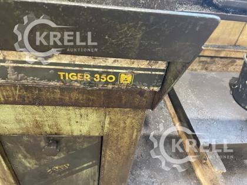
Product photoCold circular saw
Kaltkreissäge, Tiger
Est. weight ≈ 0.1–0.2 t
1 lotRef #85
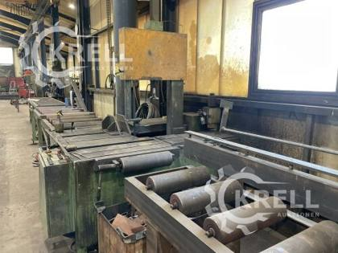
Product photoMitre band saw
Elektro-hydraulische Vertikal-Gehrungsbandsäge, Bauer
Est. weight ≈ 1.2–1.8 t
1 lotRef #107
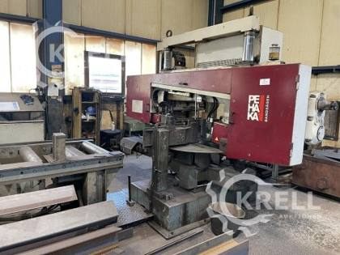
Product photoMitre band saw
Horizontal-Gehrungsbandsäge Halbautomat, PEHAKA
Est. weight ≈ 0.8–1.2 t
1 lotRef #108
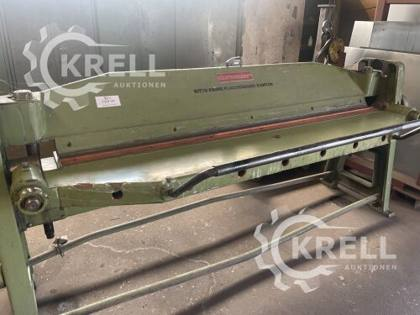
Product photoFolding machine
Manuelle Schwenkbiegemaschine, DURMAZLAR
Est. weight ≈ 0.4–0.7 t
1 lotRef #120
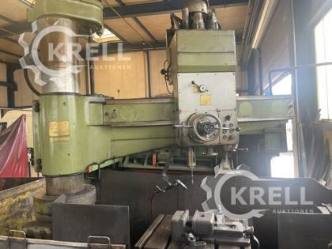
Product photoRadial drilling machine
Radialbohrmaschine, МОДЕЛЬ
Est. weight ≈ 4.7 t
1 lotRef #138
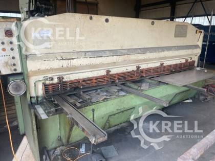
Product photoHydraulic guillotine shear
Hydraulische Tafelschere / Blechschere, HACO
Est. weight ≈ 5.0 t
1 lotRef #140
Welding machines 11 items · 11 lot
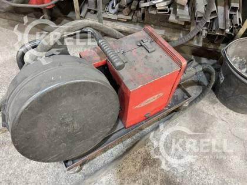
Product photoMIG/MAG welding machine
Mikroprozessor-gesteuertes MIG/MAG -u. Elektrodenschweißen, FRONIUS
Est. weight ≈ 0.1–0.2 t
1 lotRef #71
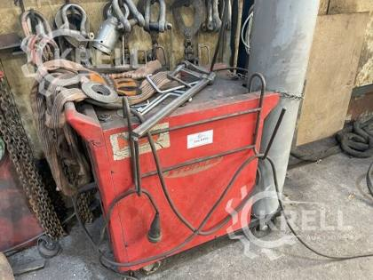
Product photoMIG/MAG welding machine
Mikroprozessor-gesteuertes MIG/MAG -u. Elektrodenschweißen FRONIUS
Est. weight ≈ 0.1–0.2 t
1 lotRef #75
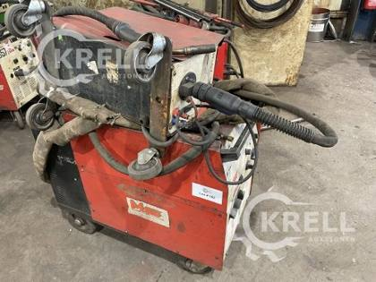
Product photoMIG/MAG welding machine
Schweißgerät, Fronius
Est. weight ≈ 0.1–0.2 t
1 lotRef #102
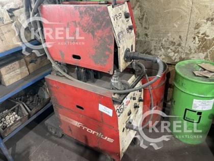
Product photoMIG/MAG welding machine
Schweißgerät, Fronius
Est. weight ≈ 0.1–0.2 t
1 lotRef #103
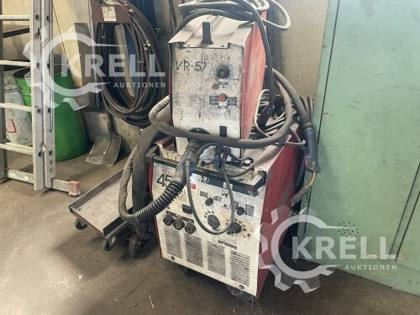
Product photoMIG/MAG welding machine
MIG/MAG Schweißgerät, Fronius
Est. weight ≈ 0.1–0.2 t
1 lotRef #121
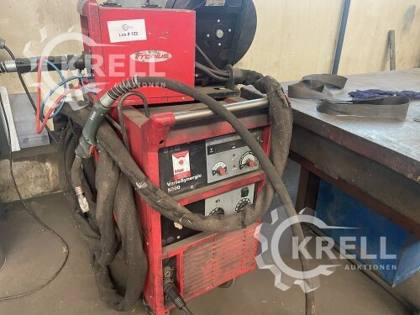
Product photoMIG/MAG welding machine
MIG/MAG Schweißgerät, Fronius
Est. weight ≈ 0.1–0.2 t
1 lotRef #122
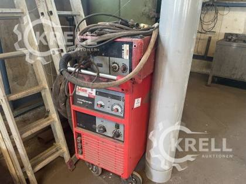
Product photoMIG/MAG welding machine
MIG/MAG Schweißgerät, MERKLE
Est. weight ≈ 0.1–0.2 t
1 lotRef #128
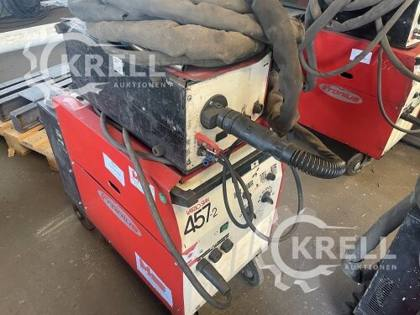
Product photoMIG/MAG welding machine
MIG/MAG Schweißgerät, MERKLE
Est. weight ≈ 0.1–0.2 t
1 lotRef #129
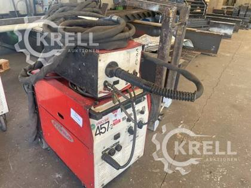
Product photoMIG/MAG welding machine
MIG/MAG Schweißgerät, MERKLE
Est. weight ≈ 0.1–0.2 t
1 lotRef #130
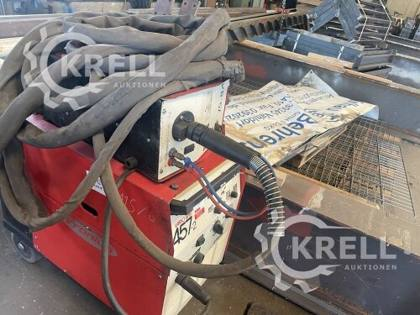
Product photoMIG/MAG welding machine
MIG/MAG Schweißgerät, MERKLE
Est. weight ≈ 0.1–0.2 t
1 lotRef #131
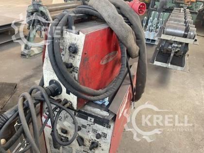
Product photoMIG/MAG welding machine
MIG/MAG Schweißgerät, MERKLE
Est. weight ≈ 0.1–0.2 t
1 lotRef #133
Power tools & core drills 16 items · 16 lot
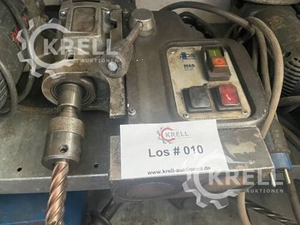
Product photoMagnetic core drill
Magnet-Kernbohrmaschine, BDS
Est. weight ≈ 0.0 t
1 lotRef #10
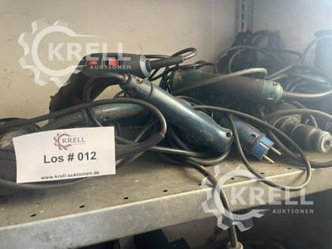
Product photoPower tools
Handbohrmaschine
Est. weight ≈ 0.0 t
1 lotRef #12
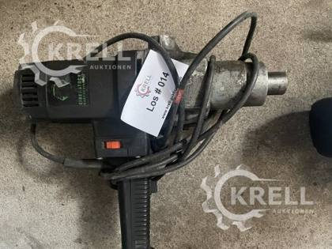
Product photoPower tools
Handbohrmaschine, Eibenstock
Est. weight ≈ 0.0 t
1 lotRef #14
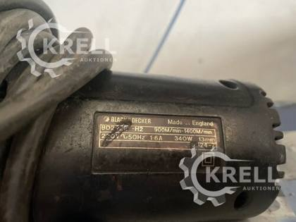
Product photoPower tools
Bandschleifer, BLACK DECKER
Est. weight ≈ 0.0 t
1 lotRef #17
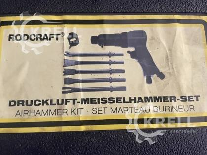
Product photoHammer drill / chisel hammer
Druckluft Meisselhammer Set, BODCRAFT
Est. weight ≈ 0.0 t
1 lotRef #20
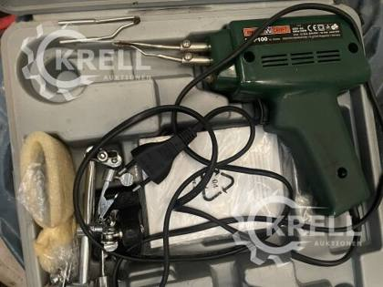
Product photoPower tools
Lötpistole, Meisterkraft
Est. weight ≈ 0.0 t
1 lotRef #21
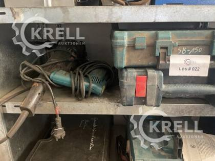
Product photoPower tools
Posten Handbohrmaschine, Zweihandflex
Est. weight ≈ 0.0 t
1 lotRef #22
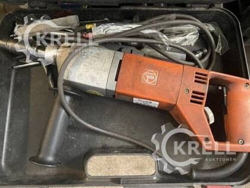
Product photoTapping machine
Gewindescheidmaschine, FEIN
Est. weight ≈ 0.0–0.1 t
1 lotRef #23
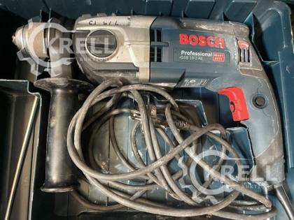
Product photoPower tools
Handbohrmaschine, BOSCH
Est. weight ≈ 0.0 t
1 lotRef #25
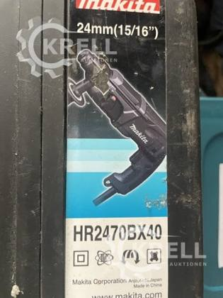
Product photoHammer drill / chisel hammer
Kombihammer, MAKITA
Est. weight ≈ 0.0 t
1 lotRef #30
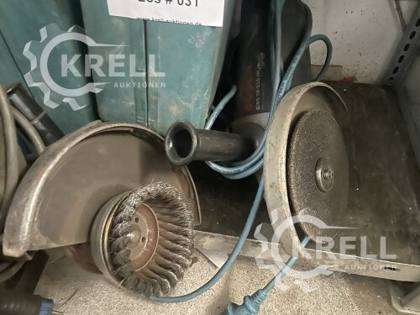
Product photoPower tools
Posten Flex-Geräte
Est. weight ≈ 0.0 t
1 lotRef #31
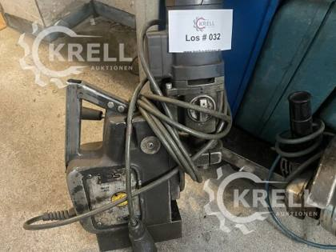
Product photoMagnetic core drill
Magnet-Kernbohrmaschine, BDS
Est. weight ≈ 0.0 t
1 lotRef #32
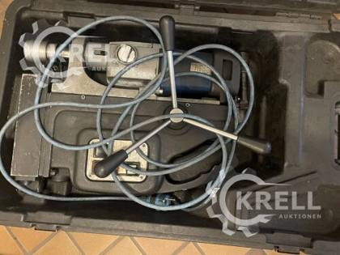
Product photoMagnetic core drill
Magnet-Kernbohrmaschine, BDS
Est. weight ≈ 0.0 t
1 lotRef #33
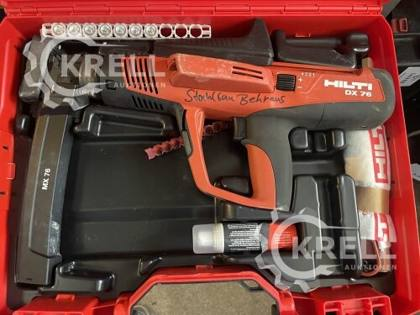
Product photoPowder-actuated fastening tool
Halbautomatisches Bolzensetzgerät, HILTI
Est. weight ≈ 0.0 t
1 lotRef #35
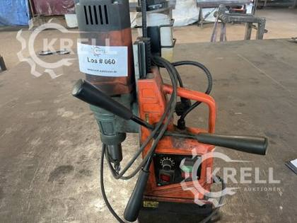
Product photoMagnetic core drill
Magnetbohrmaschine, VEVOR
Est. weight ≈ 0.0 t
1 lotRef #60
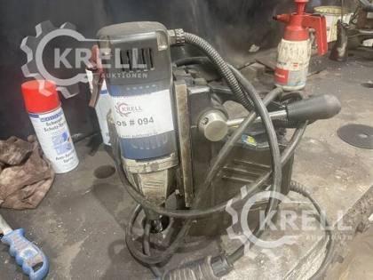
Product photoMagnetic core drill
Magnetbohrmaschine, MABasic
Est. weight ≈ 0.0 t
1 lotRef #94
Hand, measuring & lifting tools 6 items · 6 lot
Hand tools & lifting gear
Posten Kleinwerkzeug
Est. weight ≈ 0.0–0.1 t
1 lotRef #37
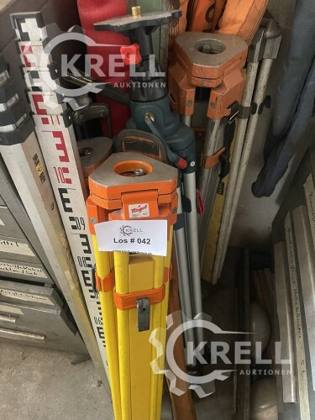
Product photoMeasuring & torque tools
Posten Stative für Rotationslaser
Est. weight ≈ 0.0 t
1 lotRef #42
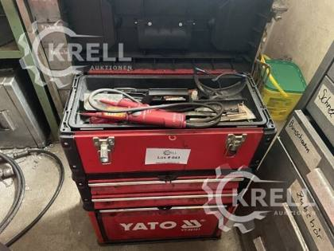
Product photoHand tools & lifting gear
Werkzeugkiste, YATO
Est. weight ≈ 0.0–0.1 t
1 lotRef #43
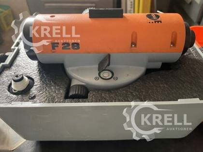
Product photoMeasuring & torque tools
Vermessungsgerät, Nedo
Est. weight ≈ 0.0 t
1 lotRef #46
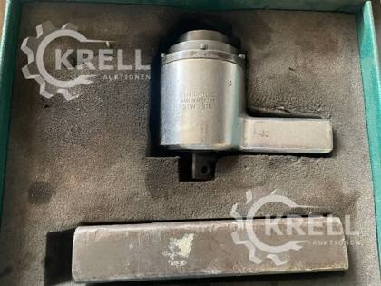
Product photoMeasuring & torque tools
Drehmomentvervielfältiger, Stahlwille
Est. weight ≈ 0.0 t
1 lotRef #50
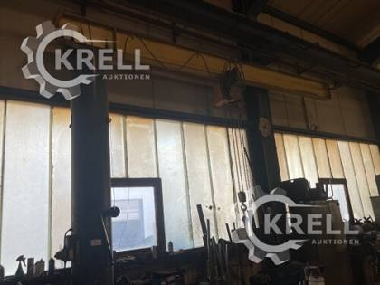
Product photoHand tools & lifting gear
Posten Gehänge
Est. weight ≈ 0.0–0.1 t
1 lotRef #62
Workshop furniture & storage 19 items · 19 lot
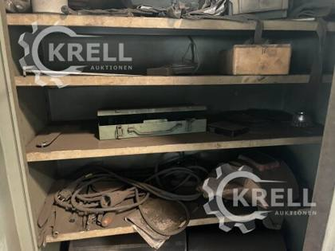
Product photoSteel cabinet (with contents)
Stahlblechschrank mit Inhalt
Est. weight ≈ 0.1–0.2 t
1 lotRef #57
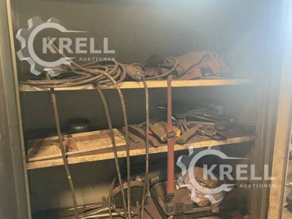
Product photoSteel cabinet (with contents)
Stahlblechschrank mit Inhalt
Est. weight ≈ 0.1–0.2 t
1 lotRef #66
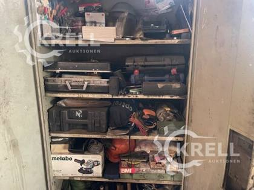
Product photoSteel cabinet (with contents)
Stahlblechschrank mit Inhalt
Est. weight ≈ 0.1–0.2 t
1 lotRef #68
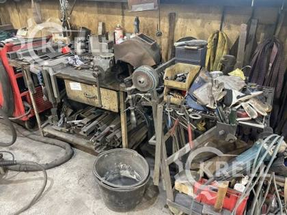
Product photoWorkbench
Werkbank
Est. weight ≈ 0.1 t
1 lotRef #72
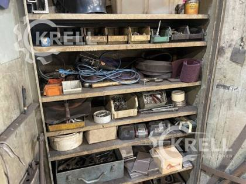
Product photoSteel cabinet (with contents)
Stahlblechschrank mit Inhalt
Est. weight ≈ 0.1–0.2 t
1 lotRef #73
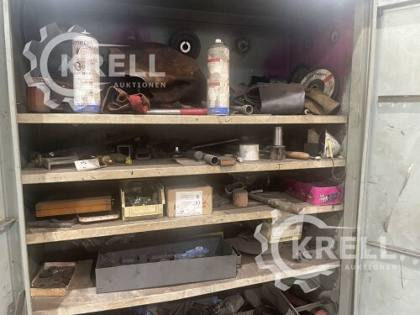
Product photoSteel cabinet (with contents)
Stahlblechschrank
Est. weight ≈ 0.1–0.2 t
1 lotRef #88
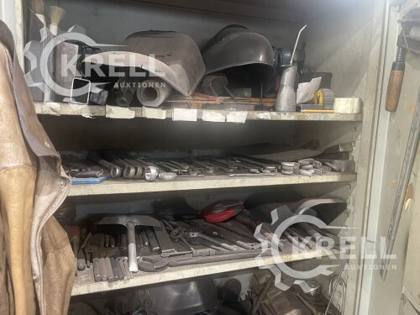
Product photoSteel cabinet (with contents)
Stahlblechschrank mit Inhalt
Est. weight ≈ 0.1–0.2 t
1 lotRef #89
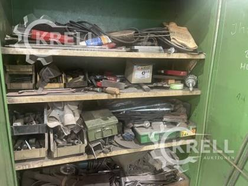
Product photoSteel cabinet (with contents)
Stahlblechschrank mit Inhalt
Est. weight ≈ 0.1–0.2 t
1 lotRef #90
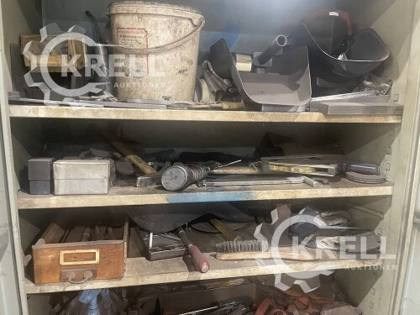
Product photoSteel cabinet (with contents)
Stahlblechschrank mit Inhalt
Est. weight ≈ 0.1–0.2 t
1 lotRef #91
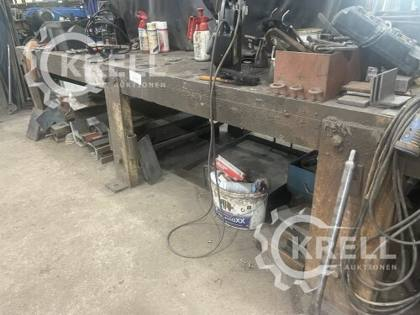
Product photoWelding / fitter's table
Schweißtisch Eigenbau
Est. weight ≈ 0.1–0.4 t
1 lotRef #96
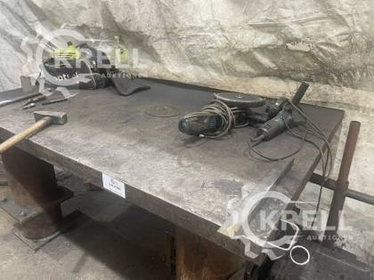
Product photoWelding / fitter's table
Schweißtisch Eigenbau
Est. weight ≈ 0.1–0.4 t
1 lotRef #97
Welding / fitter's table
Schweißtisch Eigenbau
Est. weight ≈ 0.1–0.4 t
1 lotRef #99
Aluminium ladders
Posten Alu-Leitern
Est. weight ≈ 0.0–0.1 t
1 lotRef #100
Steel cabinet (with contents)
Stahlblechschrank mit Inhalt
Est. weight ≈ 0.1–0.2 t
1 lotRef #112
Welding curtains
Posten Schweißvorhänge
Est. weight ≈ 0.0–0.1 t
1 lotRef #114
Heavy-duty shelving (with contents)
Schwerlastregal mit Inhalt
Est. weight ≈ 0.1–0.3 t
1 lotRef #115
Electrical cables
Posten Elektrokabel
Est. weight ≈ 0.1–0.2 t
1 lotRef #116
Welding / fitter's table
Schlosserarbeitstisch, ca 300x120cm
Est. weight ≈ 0.1–0.4 t
1 lotRef #123
Steel cabinet (with contents)
Stahlblechschrank mit Inhalt
Est. weight ≈ 0.1–0.2 t
1 lotRef #125
Office & staff room 7 items · 7 lot
Office & staff-room equipment
Posten Büroausstattung
Est. weight ≈ 0.1–0.2 t
1 lotRef #2
Office & staff-room equipment
Posten Büroausstattung
Est. weight ≈ 0.1–0.2 t
1 lotRef #4
Office & staff-room equipment
Posten Büroausstattung
Est. weight ≈ 0.1–0.2 t
1 lotRef #5
Office & staff-room equipment
Posten Holzregale
Est. weight ≈ 0.1–0.2 t
1 lotRef #6
Office & staff-room equipment
Multifunktionsgerät, Samsung
Est. weight ≈ 0.1–0.2 t
1 lotRef #7
Office & staff-room equipment
Miniküche
Est. weight ≈ 0.1–0.2 t
1 lotRef #8
Office & staff-room equipment
Rauminhalt Sozialraum
Est. weight ≈ 0.1–0.2 t
1 lotRef #52
Other items 1 items · 1 lot
Trailer
Anhänger offener Kasten
Est. weight ≈ 0.4 t
1 lotRef #148
Summary of contents
By product type
| Product type | Items | Quantity (lot) | Share | Est. weight |
|---|---|---|---|---|
| MIG/MAG welding machine | 11 | 11 | 16.4% | ≈ 1.3–2.2 t |
| Steel cabinet (with contents) | 10 | 10 | 14.9% | ≈ 0.8–2.0 t |
| Office & staff-room equipment | 7 | 7 | 10.4% | ≈ 0.4–1.8 t |
| Power tools | 7 | 7 | 10.4% | ≈ 0.0–0.2 t |
| Magnetic core drill | 5 | 5 | 7.5% | ≈ 0.1 t |
| Welding / fitter's table | 4 | 4 | 6.0% | ≈ 0.6–1.6 t |
| Hand tools & lifting gear | 3 | 3 | 4.5% | ≈ 0.1–0.3 t |
| Measuring & torque tools | 3 | 3 | 4.5% | ≈ 0.0–0.1 t |
| Hammer drill / chisel hammer | 2 | 2 | 3.0% | ≈ 0.0 t |
| Mitre band saw | 2 | 2 | 3.0% | ≈ 2.0–3.0 t |
| Tapping machine | 1 | 1 | 1.5% | ≈ 0.0–0.1 t |
| Powder-actuated fastening tool | 1 | 1 | 1.5% | ≈ 0.0 t |
| Workbench | 1 | 1 | 1.5% | ≈ 0.1 t |
| CNC plasma / oxy-fuel cutting machine | 1 | 1 | 1.5% | ≈ 2.0–4.0 t |
| Cold circular saw | 1 | 1 | 1.5% | ≈ 0.1–0.2 t |
| Aluminium ladders | 1 | 1 | 1.5% | ≈ 0.0–0.1 t |
| Welding curtains | 1 | 1 | 1.5% | ≈ 0.0–0.1 t |
| Heavy-duty shelving (with contents) | 1 | 1 | 1.5% | ≈ 0.1–0.3 t |
| Electrical cables | 1 | 1 | 1.5% | ≈ 0.1–0.2 t |
| Folding machine | 1 | 1 | 1.5% | ≈ 0.4–0.7 t |
| Radial drilling machine | 1 | 1 | 1.5% | ≈ 4.7 t |
| Hydraulic guillotine shear | 1 | 1 | 1.5% | ≈ 5.0 t |
| Trailer | 1 | 1 | 1.5% | ≈ 0.4 t |
| Total | 67 | 67 | 100% | ≈ 18–27 t |
By group
| Group | Items | Quantity (lot) | Share | Est. weight |
|---|---|---|---|---|
| Sheet-metal & cutting machines | 7 | 7 | 10.4% | ≈ 14–18 t |
| Welding machines | 11 | 11 | 16.4% | ≈ 1.3–2.2 t |
| Power tools & core drills | 16 | 16 | 23.9% | ≈ 0.1–0.5 t |
| Hand, measuring & lifting tools | 6 | 6 | 9.0% | ≈ 0.1–0.4 t |
| Workshop furniture & storage | 19 | 19 | 28.4% | ≈ 1.7–4.4 t |
| Office & staff room | 7 | 7 | 10.4% | ≈ 0.4–1.8 t |
| Other items | 1 | 1 | 1.5% | ≈ 0.4 t |
| Total | 67 | 67 | 100% | ≈ 18–27 t |
Shipping estimate
| Total volume (approx.) | ≈ 55–90 m³ |
| Total weight (approx.) | ≈ 18–27 t |
| 40′ High Cube containers | 1–2 |
| 20′ Standard containers | 2–4 |
Weights per line are estimates (machine data where stated: shear ≈ 5 t, radial drill 4.7 t); total = sum of the lines. Heavy machines need crane/forklift loading; the shear, radial drill and CNC cutter may require open-top or flat-rack containers. Final figures after the packing list.
Container capacity used: 40′ HC ≈ 68 m³ / 26.5 t, 20′ ≈ 28 m³ / 24 t (practical loading).
Container capacity used: 40′ HC ≈ 68 m³ / 26.5 t, 20′ ≈ 28 m³ / 24 t (practical loading).